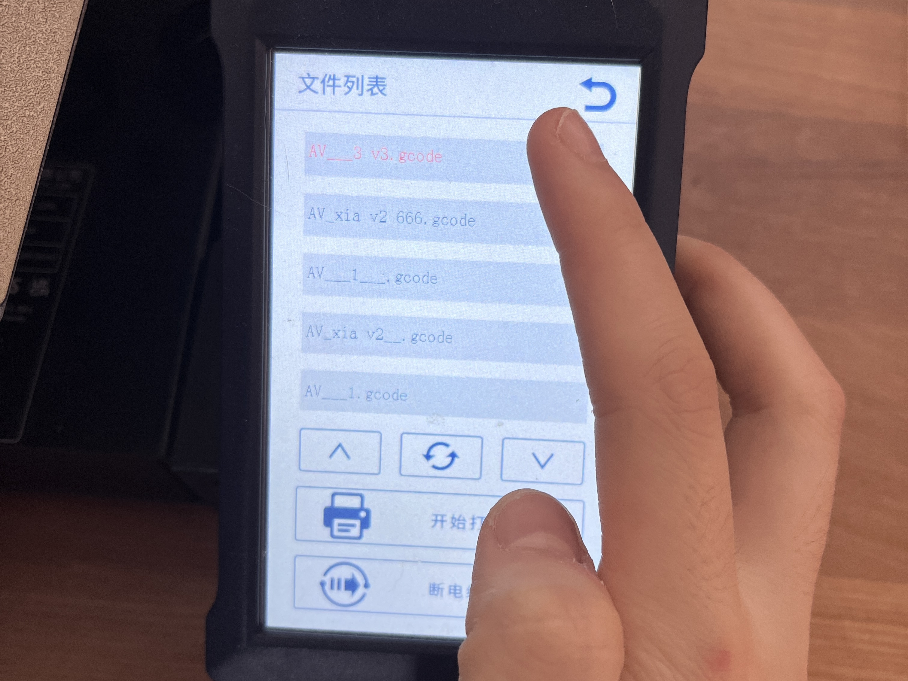

3D Printer
background
3D printing technology (also known as additive manufacturing) has made significant progress since its inception in the 1980s. The following is an overview of the latest applications, materials, machines, and new technologies of 3D printing technology.
freeformer
Create added value through integrated functionality and fit design. It is used for industrial additive manufacturing of raw materials into load-resistant plastic products.
Advantage
unrestricted
The choice of materials is unlimited: be it certified raw materials, combinations of materials and pigments, or load-resistant hard/soft adhesive combinations, soluble support materials - everything is available!
open
Open System Aberg Plastics Formless Technology (AKF) offers you the greatest degree of freedom in the field of proven standard pellet additive processing. The component characteristics can be affected by changing the process parameters.
traceability
freeformer operates with process reliability and repeatability. Data can be seamlessly traced and recorded through the App ProcessLog on the customer portal. Suitable for aggregate technology or aerospace.
Top grade
Our high-end freeformer control systems are designed for industrial use. With an unobstructed touch screen and an intuitive user interface. And automated 3D layering software for sh data preparation.
网页链接
2. Aerospace and Automotive:
Lightweight parts: 3D printing technology can produce lightweight and structurally complex components, helping to improve fuel efficiency and performance.
Rapid prototyping manufacturing: In the process of new product development, 3D printing can quickly produce prototypes, reducing research and development time and costs.
New materials
New Paper and Substrate Technology
Although "paper" is usually associated with traditional printing, the use of some new substrates in 3D printing can also be understood as "new paper" technology:
1. Nanofibers and cellulose substrates:
These materials can be used as substrates for bioprinting, with good biocompatibility and mechanical properties.
2. Recyclable materials:
Developing environmentally friendly 3D printing materials, such as biodegradable plastics and renewable resource substrates, to promote sustainable manufacturing.
From the above content, it can be seen that 3D printing technology is constantly advancing, its application fields are expanding, and new materials and technologies are constantly emerging. In the future, with the maturity and popularization of technology, 3D printing is expected to have a profound impact in more fields.
Use slice software to setting parameter
1. Initial setup, adding a printer

2. Open the previously modeled potted plant, click 'Export', select the 'stl' format, and save it to the desktop

3. Import the 'stl' format model into UltiMaker Cura and set the parameters as shown in the figure

Although "paper" is usually associated with traditional printing, the use of some new substrates in 3D printing can also be understood as "new paper" technology:
1. Nanofibers and cellulose substrates: These materials can be used as substrates for bioprinting, with good biocompatibility and mechanical properties.
2. Recyclable materials: Developing environmentally friendly 3D printing materials, such as biodegradable plastics and renewable resource substrates, to promote sustainable manufacturing. From the above content, it can be seen that 3D printing technology is constantly advancing, its application fields are expanding, and new materials and technologies are constantly emerging. In the future, with the maturity and popularization of technology, 3D printing is expected to have a profound impact in more fields.
| Name | Numerical value |
|---|---|
| The top thickness | 2 |
| The top layer | 5 |
| Bottom thickness | 2 |
| The bottom layer | 5 |
| Fill density | 20 |
| Fill pattern | Gride |
| Print temperature | 200 |
| Print Platform Temperature | 60 |
4. Select the printer as shown in the figure
5. Select 'normal 0.15mm' for the configuration file and '1.6mm' for the wall thickness

6. Click on 'Slice' and select 'Keep Changes'

7. Save and export in 'Gcode' format
Use 3D printer to manufacture it
1. Import the 'Gcode' format model into a USB drive

2. Insert the storage card into the 3D printer
3. Click 'Print'

4. In the file list, select the model we need to print
5. Click 'Start Printing'
6. Wait for heating. Once the extrusion temperature reaches 200 degrees Celsius and the hot bed temperature reaches 60 degrees Celsius, the printing work can begin
7. Start working
Postprocess the surface
Because the branches of the flowers are too thin to support the weight, they break during the printing process.
Gcode
1.Model
Modeling sketch(with dimensions)

Modeling sketch(without dimensions)

2.Three views
Top view
Side view

Front view
Convex oblique effect

3.Save as stl file

4.Put it into 3D printing software
Click file

Select file
Click to slice

Display print time

3D path
TYPE:SKIRT
Represents comments in G-code.
TYPE
indicates that the following command will create a skirt.
Purpose: The skirt is the line around the actual print that prepares the nozzle and ensures a smooth flow of material. The following command will create a skirt.
G1 F1500 E0
G1: Linear movement (printing movement).
F1500: Set the moving speed to 1500 mm/min.
E0: Set the extrusion amount to 0 mm³. This resets the extrusion distance.
Purpose: Initialize or reset the extrusion before starting skirt printing. Linear movement, speed 1500 mm/min, reset extrusion volume to 0 mm³.
G1 F1800 X72.722 Y114.974 E0.11031
G1: Linear movement (printing movement).
F1800: Set the moving speed to 1800 mm/min.
X72.722 Y114.974: Move to coordinates (72.722, 114.974).
E0.11031: Extrusion of 0.11031 mm³ material.
Purpose: The print head moves to the next point while extruding a small amount of material to begin forming the skirt. Move linearly to coordinates (72.722, 114.974), speed is 1800 mm/min, and extrude 0.11031 mm³ of material.
G1 X74.246 Y114.752 E0.18714
G1: Linear movement (printing movement).
X74.246 Y114.752: Move to coordinates (74.246, 114.752).
E0.18714: A total of 0.18714 mm³ of material is extruded.
Purpose: To continue extruding material while moving to the next point, forming part of the skirt. Move linearly to coordinates (74.246, 114.752), extruding a total of 0.18714 mm³ of material.
Download plugin (nozzleboss)
1. Search for nozzleboss plugin on github
2. Click code
3.download Zip
Open blender
1. Click Edit
2. Click Preferences
3. Click Plugin-Install
4. Select the plug-in and install the plug-in
5. Search for nozzleboss and select Import - Export: nozzleboss. Save the Settings.
Import the G-code file
1. Open the small arrow in the sidebar and click nozzleboss
2. Click import G-code.

3. Select the required file